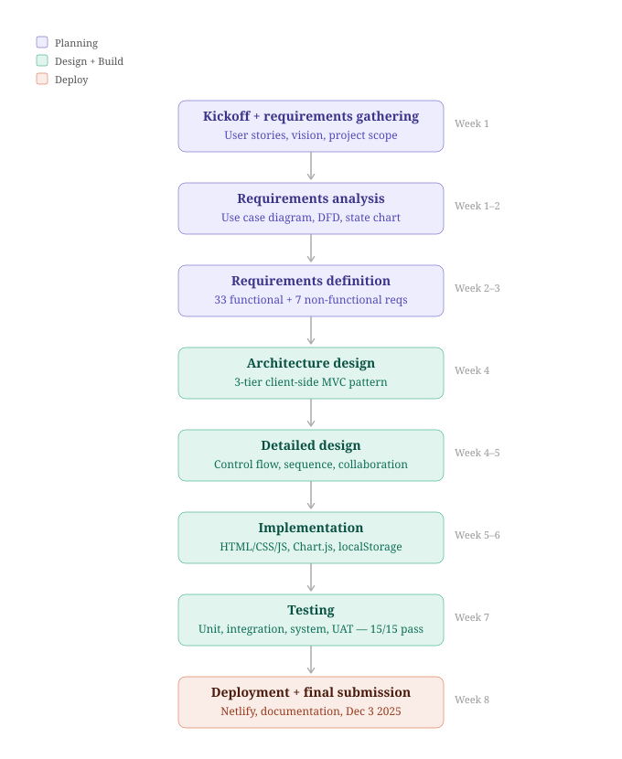
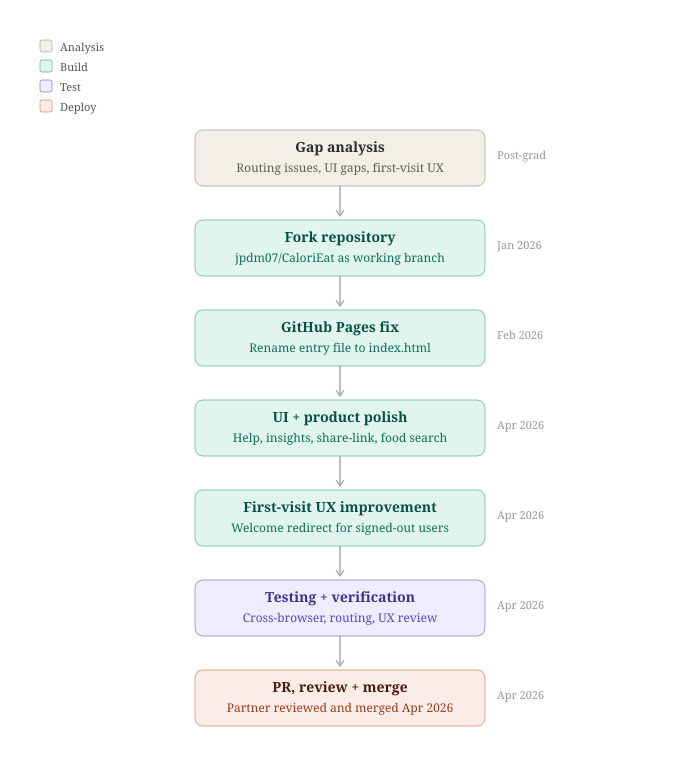

CaloriEat — Calorie & Nutrition Tracker
A browser-based app for logging meals, tracking macros and weight, and reading progress through Chart.js dashboards. Built with Michael Chavez as our UHCL Software Engineering capstone (SWEN 6837, final submission December 2025), then extended after graduation with hosting cleanup, UX polish, and pull requests merged back into the team repo.
What we set out to prove
CaloriEat helps adults manage weight by tracking calories, macronutrients, and weigh-ins with clear visual feedback—not a spreadsheet, not a mockup, but a working client-side app with real persistence in the browser.
Capstone vision (from our project plan): accurate meal logging, personalized goals, an intuitive dashboard, and secure-feeling access—while staying realistic about scope (no mobile native app, no heavy AI in v1). Planned future ideas we documented included meal suggestions by diet type, voice logging, and milestone rewards.
What the team shipped by December 2025
We followed an agile, feature-driven rhythm with weekly check-ins, shared documentation, and GitHub for code. Final deliverables included the running app, user manual, requirements (including functional and non-functional items with acceptance criteria), architecture, detailed design (control flow, sequence, and collaboration models), test strategy and results, and deployment for browser testing.
- Auth & profile — Registration, login, logout, editable profile (height, weight, birthdate, gender, display name).
- Goals — Daily calorie target and macro goals (protein, carbs, fat, vegetables, sugar).
- Meals — Manual entry plus search over a large embedded food database with auto-fill; meal types (breakfast, lunch, dinner, snack); history with edit/delete; custom meal date and “clear selection” on search.
- Dashboard & charts — Six progress rings; bar and line charts for calories, weight (with projected trend), macros, meal timing, and food categories; time filters (overall, yearly, monthly, weekly, daily); fullscreen chart mode.
- Weigh-in — Log weight and feed the weight trend visualization.
- Help & contact — In-app help sections and a contact form for authenticated users.
- Persistence — Profiles, meals, goals, and weigh-ins stored in
localStorage(client-only, privacy-friendly, no server required for the capstone build).
Capstone software lifecycle
SWEN 6837 expected a full engineering story—not only working code. The diagram below is the SDLC frame Michael and I used from October through December 2025: how we moved from agreed requirements into design artifacts, time-boxed implementation, documented testing, and a graded handoff we could both defend.

Process ↗Grad school — course lifecycle through final submission
How to read it: Each stage fed concrete deliverables (models, manual, test evidence) before we treated the build as “done.” That order kept integration risk low and made the December snapshot reproducible—the same tree preserved today as fb29950 on my fork.
Where I owned the paperwork and the foundations
Per our submitted plan, I led or co-owned documentation and modeling that made the implementation legible to graders and to each other:
- Project vision document — Purpose, scope, users, capabilities, and non-functional targets.
- Requirements analysis — Use case diagram, data flow model, and state chart aligned to user stories.
- Architecture & detailed design — Client-side MVC view of the system, component hierarchy, data dictionaries for user profile, meal entries, and food DB rows; design models for add-meal flow, dashboard rendering, and food search collaboration; rationale for offline JSON food database vs. paid APIs.
- User manual — Screen-based walkthrough of login, profile, dashboard, charts, goals, add meal (including database search), weigh-in, help, and contact.
- Engineering work — Backend/database responsibilities and testing alongside Michael’s front-end and integration testing leadership.
How it’s built and how we verified it
We described the app as a client-side MVC single-page experience: HTML/CSS views, Chart.js for visualization, JavaScript controllers for validation and orchestration, localStorage for user state, and a bundled JSON food database for instant, offline search. That choice traded a larger initial download for zero API fees, offline use after load, and predictable performance.
Testing (documented in our final report) layered unit checks on search, nutrition math, validation, and categorization; integration checks on localStorage, Chart.js, food queries, and navigation; system walks through full logging, goals, weigh-ins, and restart persistence; and informal user acceptance sessions with participants who praised search speed, auto-fill, and the dark UI while suggesting cloud sync, mobile layout, favorites, and exports for the future.
“Fifteen critical test cases we tracked for the capstone all passed in Chrome, Edge, and Firefox on the deployed URL—after we learned the hard way that file:// isn’t a fair stand-in for real hosting.”
Welcome-first flow and maintained demo
The canonical team repository remains Mchavez31/CaloriEat. I work from my fork jpdm07/CaloriEat for GitHub Pages and post-grad changes, then open PRs so improvements land on the original repo too.
February 2026: Standard index.html entry for predictable Pages hosting.
April 2026: Help and UI polish, insights and food search tweaks, footer refresh, and a welcome route so visitors who aren’t signed in don’t drop into the app shell cold.
Post‑graduation delivery loop
After grades closed, the product still had real users (us, classmates, anyone hitting the Pages URL). I kept the same discipline in a lighter loop: small scope, explicit verification, and no “surprise” commits on the repo my teammate owns. The flow below is how I handled the February–April 2026 changes—fork, ship, review, merge—so the public demo and the canonical history stay aligned.

Process ↗Current chapter — fork → PR → merge with shared ownership
Why it matters: Treating jpdm07/CaloriEat as a working branch and Mchavez31/CaloriEat as protected main mirrors professional practice: I can iterate quickly, but production lineage only moves when another engineer agrees. That is the same story the compare link at the bottom of this page tells in Git history.
Below is the current welcome screen as deployed from my fork (same build is mirrored from the team account).

Live ↗Post‑grad entry — welcome before the dashboard
Capstone handoff vs. current build
The capstone snapshot on my fork (fb29950) preserves the tree as submitted: modular HTML entry (Index_Modular.html), pre–April 2026 UI, and no welcome-first redirect. Comparing that commit to main shows every post-grad delta in one place—standard entry file, onboarding, polish, and merges.

Then ↗Representative capstone-era dashboard view (see snapshot link below for exact tree)
What this demonstrates
The capstone shows I can co-own a full software lifecycle with a partner: models, requirements, implementation, testing, and honest write-ups. The post-grad chapter shows I can keep shipping after grades are done—hosting hygiene, UX fixes, and fork → PR → merge with the teammate who owns the canonical repo.